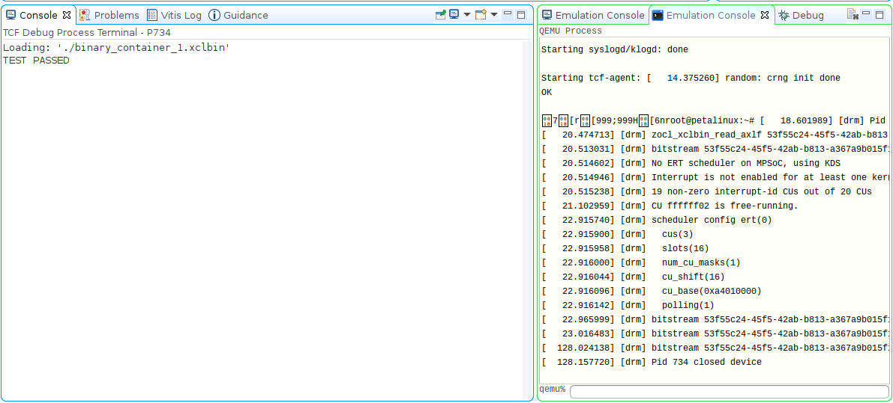

Versal Custom Platform Creation Tutorial |
Step 4: Test the Platform¶
Test 1: Read Platform Info¶
With Vitis environment setup, platforminfo tool can report XPFM platform information.
We can verify hardware configuration (clocks, memory) and software configuration (domain) are set as expected.
Show Log
# Find the XPFM file
cd pfm
find . -name "*.xpfm"
cd <xpfm directory>
# Report Platform Info
platforminfo vck190_custom.xpfm
==========================
Basic Platform Information
==========================
Platform: vck190_custom
File: .../03_Edge_VCK190/ref_files/step3_pfm/platform_repo/vck190_custom/export/vck190_custom/vck190_custom.xpfm
Description:
A custom platform VCK190 platform
=====================================
Hardware Platform (Shell) Information
=====================================
Vendor: xilinx
Board: name
Name: name
Version: 0.0
Generated Version: 2021.2
Hardware: 1
Software Emulation: 1
Hardware Emulation: 1
Hardware Emulation Platform: 0
FPGA Family: versal
FPGA Device: xcvc1902
Board Vendor: xilinx.com
Board Name: xilinx.com:vck190:2.2
Board Part: xcvc1902-vsva2197-2MP-e-S
=================
Clock Information
=================
Default Clock Index: 0
Clock Index: 0
Frequency: 200.000000
Clock Index: 1
Frequency: 100.000000
Clock Index: 2
Frequency: 300.000000
==================
Memory Information
==================
Bus SP Tag: DDR
=============================
Software Platform Information
=============================
Number of Runtimes: 1
Default System Configuration: vck190_custom
System Configurations:
System Config Name: vck190_custom
System Config Description: vck190_custom
System Config Default Processor Group: xrt
System Config Default Boot Image: standard
System Config Is QEMU Supported: 1
System Config Processor Groups:
Processor Group Name: aiengine
Processor Group CPU Type: ai_engine
Processor Group OS Name: aie_runtime
Processor Group Name: xrt
Processor Group CPU Type: cortex-a72
Processor Group OS Name: linux
System Config Boot Images:
Boot Image Name: standard
Boot Image Type:
Boot Image BIF: vck190_custom/boot/linux.bif
Boot Image Data: vck190_custom/xrt/image
Boot Image Boot Mode: sd
Boot Image RootFileSystem:
Boot Image Mount Path: /mnt
Boot Image Read Me: vck190_custom/boot/generic.readme
Boot Image QEMU Args: vck190_custom/qemu/pmc_args.txt:vck190_custom/qemu/qemu_args.txt
Boot Image QEMU Boot:
Boot Image QEMU Dev Tree:
Supported Runtimes:
Runtime: OpenCL
Test 2: Run a PL acceleration application¶
To verify the platform functionality, we will create an acceleation project with PL kernel. We will use Vitis built-in Vector Addition template to do this test.
Launch Vitis
mkdir -p ref_files/step4_verify cd ref_files/step4_verify vitis -workspace ./ &
Close the welcome tab after Vitis launches.
Add custom platform
Select menu Xilinx -> Add custom platform…
Click add button
Select the platform directory that step3 generates. For example
<full_path>/platform_repoClick OK
Create vector addition application on the custom platform
Select menu File -> New -> Application Project.
Go through the welcome page and click Next.
On Platform page, select vck190_custom platform in the platform list. Click Next.
Set Application project name to vadd, target processor psv_cortexa72_SMP. Click Next.

Input Sysroot path (step3_pfm/sw_comp/sysroots/cortexa72-cortexa53-xilinx-linux)
Input RootFS path (step3_pfm/sw_comp/rootfs.ext4)
Input Kernel Image path (step3_pfm/sw_comp/Image). These components were prepared in step 3. Click Next.
Select template Vector Addition. Click Finish.
(Optional) Build the vector addition application for hardware emulation
Select vadd_system project
Click the drop down of Build hammer icon on tool bar, select Emulation-HW. Alternatively, this step can be done by selecting Active Build Configuration to Emulation HW and click the build icon.
If it pops-up a dialogue to ask whether to clean the project, select Don’t clean.
Build the vector addition application for hardware
Select vadd_system project
Click the drop down of Build hammer icon on tool bar, select Hardware. Alternatively, this step can be done by selecting Active Build Configuration to Hardware and click the build icon.
It takes some time to build hardware. Finally Vitis will generate sd_card.img in vadd_system/Hardware/package directory.
(Optional) Test the Application on Hardware Emulation¶
Launch Emulator for PS
Click menu Xilinx -> Start/Stop Emulator
Select Project: vadd_system, Configuration: Emulation-HW

Click Start
There will be prints on Emulation Console.
Wait for it to boot Linux. The wait window will disappear after it detects Linux boot successfully.
Launch PL emulation
Right click vadd_system, select Run as -> Run Configurations
Select vadd_system-Default
Change Build Configuration to Emulation-HW
Click Run
Check run result

Stop the Emulator
Click menu Xilinx -> Start/Stop Emulator
Click Stop button
Test the Application on Hardware¶
Copy
vadd_system/Hardware/package/sd_card.imgto local if you build the project on a remote server or virtual machine.Program sd_card.img to SD card. Refer to AR#73711 for detailed steps.
Note: The programmed SD card has two partitions. FAT32 partition with boot components; EXT4 partition with Linux root file system. Windows system by default cannot see the contents of EXT4 partition.
Note: Please eject the SD card properly from the system after programming it.
Insert the SD card and boot the VCK190 board with SD boot mode (SW1[4:1] = “1110”: OFF, OFF, OFF, ON) and power on.
Note: Refer to VCK190 Evaluation Board User Guide for details about boot mode.
Connect to UART console
Launch the test application from UART console
cd /mnt/sd-mmcblk0p1 ./vadd binary_container_1.xclbin
Note: Depends on the device tree version, the mount point of the SD card could be /mnt/sd-mmcblk1p1. Please try this path if /mnt/sd-mmcblk0p1 is not available on your system.
Expected print on UART console
Show Log
root@petalinux:/mnt/sd-mmcblk0p1# ./vadd binary_container_1.xclbin
[ 34.747622] [drm] Pid 770 opened device
[ 34.751501] [drm] Pid 770 closed device
[ 34.759710] [drm] Pid 770 opened device
[ 34.763568] [drm] Pid 770 closed device
[ 34.767554] [drm] Pid 770 opened device
Loading: 'binary_container_1.xclbin'
[ 35.023095] [drm] get section AIE_METADATA err: -22
[ 35.023119] [drm] zocl_xclbin_read_axlf 1ec78909-b5e7-4db2-9fe9-22fd362b09a4 ret: 0
[ 35.029555] [drm] bitstream 1ec78909-b5e7-4db2-9fe9-22fd362b09a4 locked, ref=1
[ 35.037397] [drm] No ERT scheduler on MPSoC, using KDS
[ 35.049806] [drm] 9 non-zero interrupt-id CUs out of 10 CUs
[ 35.049852] [drm] scheduler config ert(0)
[ 35.055426] [drm] cus(1)
[ 35.059435] [drm] slots(16)
[ 35.062132] [drm] num_cu_masks(1)
[ 35.065095] [drm] cu_shift(16)
[ 35.068578] [drm] cu_base(0xa4010000)
[ 35.071799] [drm] polling(0)
[ 35.075658] [drm] bitstream 1ec78909-b5e7-4db2-9fe9-22fd362b09a4 unlocked, ref=0
TEST PASSED
[ 35.079775] [drm] bitstream 1ec78909-b5e7-4db2-9fe9-22fd362b09a4 locked, ref=1
[ 35.099312] [drm] bitstream 1ec78909-b5e7-4db2-9fe9-22fd362b09a4 unlocked, ref=0
[ 35.116279] [drm] Pid 770 closed device
Note: the [ 35.116279] [drm] messages are print from XRT for debugging purpose. It only shows up on UART. It will now print on ssh. This debugging message can be turned off by turning down the system dmesg reporting level.
echo "4" > /proc/sys/kernel/printk
What Just Happened?
Vitis runs PS emulation in QEMU, PL and AIE emulation in XSIM. They can communicate with each other. When running the emulation, Vitis downloads executable and xclbin to Remote Working Directory and launch it.
Test 3: Run an AIE + PL acceleration application project¶
To verify the platform functionality, we will create a project with AIE + PL kernel and PS application and run it on VCK190 board.
Create vector addition application on the custom platform
Select menu File -> New -> Application Project.
Go through the welcome page and click Next.
On Platform page, select vck190_custom platform in the platform list. Click Next.
Set application name plaie, target processor psv_cortexa72_SMP. Click Next.
Input Sysroot path, RootFS path and Kernel Image. Click Next.
Select template AI Engine System Design Examples -> AI Engine, PL and PS System Design. Click Finish.
Build the vector addition application for hardware
Select plaie_system project
Click the drop down of Build hammer icon on tool bar, select Hardware. Alternatively, this step can be done by selecting Active Build Configuration to Hardware and click build icon.
(Optional) Build the vector addition application for hardware emulation
Select plaie_system project
Click the drop down of Build hammer icon on tool bar, select Emulation-HW. Alternatively, this step can be done by selecting Active Build Configuration to Emulation HW and click build icon.
If it pops-up a dialogue to ask whether to clean the project, select Don’t clean.
After a successful build, sd_card.img is generated in
plaie_system/Hardware/packageandplaie_system/Hardware/package_no_aie_debugdirectory. They include all files in sd_card directory in the first FAT32 partition and contents of rootfs.ext4 in second EXT4 partition. The differences are the sd_card.img in package directory has a package parameterenable_aie_debug=1. It’s used for debugging. The one in package_no_aie_debug can work for free running.
Test the Application on Hardware¶
Copy the sd_card.img from
plaie_system/Hardware/package_no_aie_debugdirectory to local, if the project is run on a server or virtual machine.Note: Vitis will generate images with aie_debug enabled and disabled. The image with aie_debug disabled will run freely; The image with aie_debug enabled will halt AI Engine and wait for the debugger to connect to it.
Program sd_card.img to the SD card. Refer to AR#73711 for detailed steps.
Note: The programmed SD card has two partitions. FAT32 partition with boot components; EXT4 partition with Linux root file system. Windows system by default cannot see the contents of EXT4 partition.
Note: Please eject the SD card properly from the system after programming it.
Insert the SD card and boot the VCK190 board with SD boot mode (SW1[4:1] = “1110”: OFF, OFF, OFF, ON) and power on.
Note: Refer to VCK190 Evaluation Board User Guide for details about boot mode.
Setup XRT runtime environment and launch test application from UART console
cd /mnt/sd-mmcblk0p1 ./plaie binary_container_1.xclbin
Expected print on UART console
Show Log
root@petalinux:/mnt/sd-mmcblk0p1# ./plaie binary_container_1.xclbin
[ 381.642589] [drm] Pid 693 opened device
[ 381.646455] [drm] Pid 693 closed device
[ 381.654748] [drm] Pid 693 opened device
[ 381.658589] [drm] Pid 693 closed device
[ 381.662601] [drm] Pid 693 opened device
Loading: 'binary_container_1.xclbin'
[ 381.928588] [drm] zocl_xclbin_read_axlf 8ff25a1d-3722-4718-bae4-e65ef3313a0f ret: 0
[ 381.934195] [drm] bitstream 8ff25a1d-3722-4718-bae4-e65ef3313a0f locked, ref=1
[ 381.941892] [drm] No ERT scheduler on MPSoC, using KDS
[ 381.954244] [drm] Interrupt is not enabled for at least one kernel. Fall back to polling mode.
[ 381.954419] [drm] 12 non-zero interrupt-id CUs out of 13 CUs
[ 381.963051] [drm] CU ffffff02 is free-running.
[ 381.968711] [drm] scheduler config ert(0)
[ 381.973149] [drm] cus(3)
[ 381.977152] [drm] slots(16)
[ 381.979853] [drm] num_cu_masks(1)
[ 381.982813] [drm] cu_shift(16)
[ 381.986292] [drm] cu_base(0xa4010000)
[ 381.989515] [drm] polling(1)
[ 381.993375] [drm] bitstream 8ff25a1d-3722-4718-bae4-e65ef3313a0f unlocked, ref=0
TEST PASSED
[ 381.998058] [drm] bitstream 8ff25a1d-3722-4718-bae4-e65ef3313a0f locked, ref=1
[ 382.022624] [drm] bitstream 8ff25a1d-3722-4718-bae4-e65ef3313a0f unlocked, ref=0
[ 382.045158] [drm] Pid 693 closed device
(Optional) Test the Application on Hardware Emulation¶
Launch Emulator for PS
Click menu Xilinx -> Start/Stop Emulator
Select Project: plaie_system, Configuration: Emulation-HW
Click Start
There will be prints on Emulation Console.
Wait for it to boot Linux. The wait window will disappear after it detects Linux boot successfully.
Launch PL and AIE emulation
Right click plaie_system, select Run as -> Run Configurations
Select plaie_system-Launch
Click Run

Stop Emulator
Click menu Xilinx -> Start/Stop Emulator
Click Stop button
Note: The fast track script runs a different AI Engine test application to simplify the script. But it should also pass.
Congratulations now you’ve created a custom platform that PL acceleration kernel and AIE applications can work on it.
In next chapter, we’ll list some frequently encountered problems and frequently asked questions. Please take a look if you’d like to understand more of platform creation.
Copyright© 2021 Xilinx